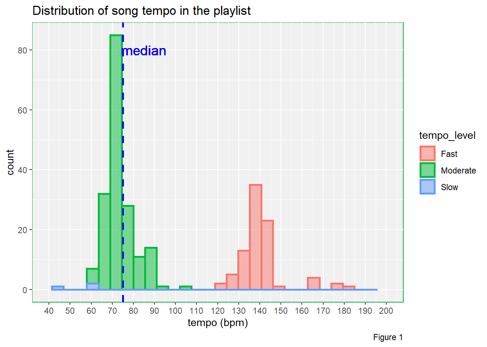
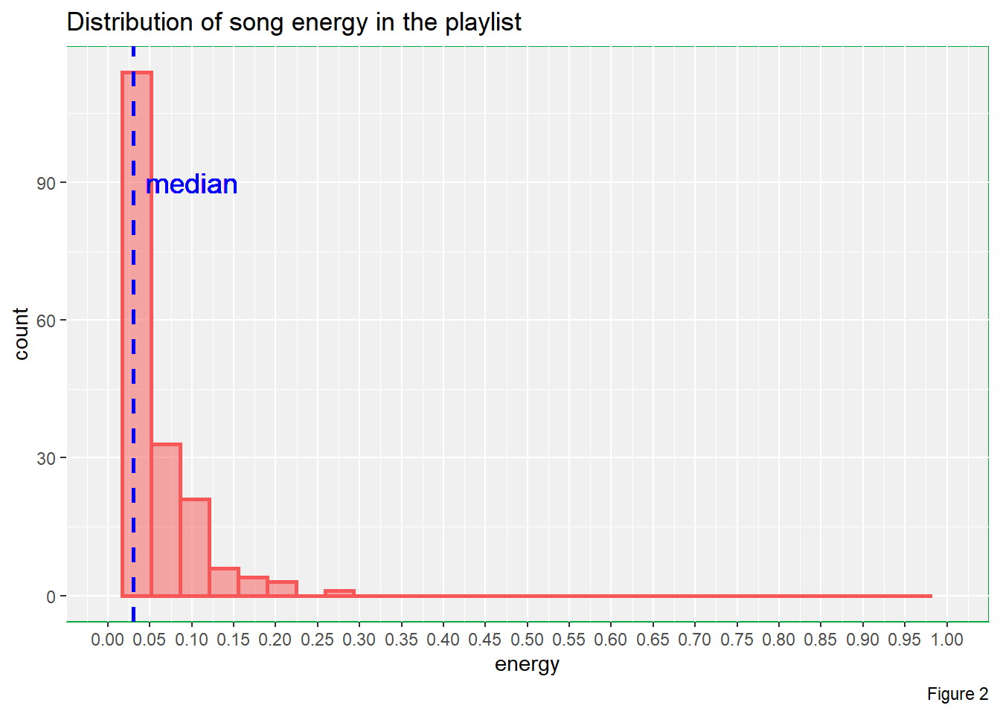
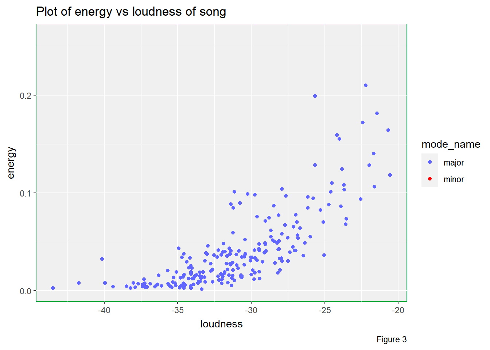
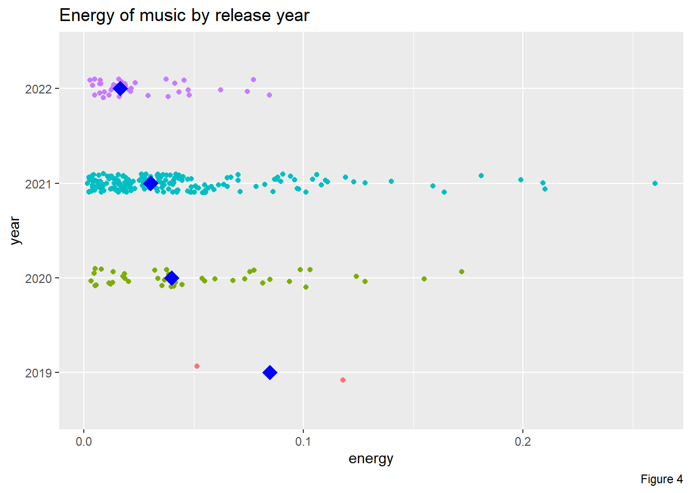

Some people believe that listening to music can help them to sleep better. To me, I do not have the habit of listening to music at bedtime. However, listening to music for sleeping seems to be quite attractive, I would like to give it a try.
Although I have little experience in picking music pieces for sleeping, I expect that music pieces for my sleeping must be slow, calm and happy.
Spotify, as one of the major music streaming platforms, provides the ability for users to create and share their playlists. For convenience, I randomly selected one of the playlists which specifies for sleeping. I would like to investigate the characteristics of this playlist and determine whether this playlist meet my expectation.
In the meantime, I would like to use the music pieces in this playlist to explorer the relationships among variables.
I decided to focus on tempo, energy,
mode_name, loudness and year. It
is because in reference to my expectation, slowness can be measured by
tempo, calmness can be represented by energy,
whereas happiness can be reflected by mode_name. I included
“loudness” here because I think energy and
loudness are closely related. For year, it
represented the release year. I would like to explorer is there any
difference in terms of calmness for music pieces in various release
year.
Thus, I need to investigate the following aspects:
The tempo of most of the music pieces must be slow. For
simplicity, I will classify the music pieces based on their speed
(tempo) into the following levels:
• Slow if bpm < 60
• Moderate if bpm < 120
• Fast if bpm >= 120
Most of the music pieces must be calm, which means that they must
have energy value < 0.5.
Most of the music pieces must be in happy mood.
See if there is any association between energy and
loudness. I suspect music pieces with higher loudness will
result in higher energy. Also, music pieces in happy mood usually are in
major. I want to know can music pieces in different mode
affect the energy value.
See if the average energy level of Music pieces from different
years for sleeping are the same. I believe year and
energy should be independent.
song_data <- fromJSON("./Spotify_data/deep_sleep_choosen.json")
# Ensure all the songs are unique (no duplication)
nrow(song_data) == length(unique(song_data$track_id)) &
nrow(song_data) == length(unique(song_data$track_name))## [1] TRUE# Round tempo to the nearest integer
song_data <- mutate(song_data,
tempo_integer = round(tempo))
# Divide rounded tempo into 3 levels: Slow, Moderate, Fast
song_data <- mutate(song_data,
tempo_level = case_when(tempo_integer < 60 ~ "Slow",
tempo_integer < 120 ~ "Moderate",
tempo_integer >= 120 ~ "Fast"))
# Median of tempo
tempo_median <- median(song_data$tempo_integer) %>%
round()
# Median of energy
energy_median <- median(song_data$energy)
# Create a column for year
song_data <- mutate(song_data,
year = substr(song_data$release_date, 1, 4))
# Summary of median energy based on release year
energy_by_year <- summarise(group_by(song_data, year),
median_energy = median(energy))For the first aspect, I have only one variable tempo.
Since the variable is a numeric variable, I will use histogram plot to
visualise the distribution of my data. Although density plot can also be
used, but I think histogram plot here is better as I can show the
frequency in each tempo interval. Apart from that, it will be easier for
viewers to read the plot if I divided music pieces from tempo group into
different colours.
For the second aspect, I also have one variable energy.
Similarly, I will choose histogram plot as I can show the frequency in
each interval.
For the third aspect, my response variable is energy and
my explanatory variables are loudness and
mode_name. Since both energy and loudness are numeric
variables, I decide to use scatter plot - geom_point() from
{ggplot2}. For the variable mode_name, since
it has 2 levels, I can further divide my scatter plot into 2 colours,
one colour for music in major and another colour for music in minor.
For the last aspect, the response variable is energy,
which is a numeric variable; the explanatory variable is
year, which is a categorical variable. So, I will use
jitter plot to visualise my data. Although box plot can also show the
distribution of data from different years, I think jitter plot is better
as we can see all the data points from the data set. Yet, figuring out
the median from jitter plot is harder than that of box plot. Therefore,
I also add a point in each year to indicate the median energy value.
# Distribution of tempo of song
ggplot(data = song_data) +
geom_histogram(aes(x = tempo_integer,
colour = tempo_level,
fill = tempo_level),
lwd = 1,
alpha = 0.5) +
geom_vline(xintercept = tempo_median,
lty = 2,
lwd = 1,
colour = "blue") +
geom_text(x = tempo_median + 10,
y = 80,
label = "median",
size = 5,
colour = "blue") +
labs(title = "Distribution of song tempo in the playlist",
x = "tempo (bpm)",
caption = "Figure 1") +
scale_x_continuous(limit = c(40, 200),
breaks = seq(0, 200, 10)) +
theme(panel.background = element_rect(fill = "#f0f0f0",
colour = "#00a83e"))
# Distribution of song energy
ggplot(data = song_data) +
geom_histogram(aes(x = energy),
lwd = 1,
colour = "#f75757",
fill = "#f75757",
alpha = 0.5) +
geom_vline(xintercept = energy_median,
lty = 2,
lwd = 1,
colour = "blue") +
geom_text(x = energy_median + 0.07,
y = 90,
label = "median",
size = 5,
colour = "blue") +
labs(title = "Distribution of song energy in the playlist",
x = "energy",
caption = "Figure 2") +
scale_x_continuous(limit = c(0, 1),
breaks = seq(0, 1, 0.05)) +
theme(panel.background = element_rect(fill = "#f0f0f0",
colour = "#00a83e"))
# Energy vs loudness of song in different mode_name levels
ggplot(data = song_data) +
geom_point(aes(x = loudness,
y = energy,
colour = mode_name)) +
labs(title = "Plot of energy vs loudness of song",
caption = "Figure 3") +
scale_colour_manual(values = c("#6166ff", "#ff0000")) +
theme(panel.background = element_rect(fill = "#f0f0f0",
colour = "#00a83e")) +
transition_states(mode_name)
# energy by year
ggplot() +
geom_jitter(data = song_data,
aes(x = energy,
y = year,
colour = year),
height = 0.1) +
geom_point(data = energy_by_year,
aes(x = median_energy,
y = year),
colour = "blue",
shape = 18,
size = 5) +
labs(title = "Energy of music by release year",
caption = "Figure 4") +
guides(colour = "none")
{ggplot2} provides a layered grammar of graphics
framework. Therefore, I can add different layers to the same plot.
For example, in the third plot, I passed my data frame
song_data into the base layer function so that I did not
have to passed the data frame to my geometric object layer again.
After that, I added a geometric object layer. Since I wanted to have
a point plot of energy vs loudness, I mapped
energy to x and loudness to
y by calling the aes() function inside the
geom_point() function. Inside the aes() function, I also
included the attribute colour = mode_name as I wanted to
divided the data into 2 subgroups, where each subgroup was shown in
different colours.
Then, I also added a labels layer. I included title and
caption in labs() to add title and assign a
figure number to the plot in order to make it easier to be
understood.
Also, I thought the default colours to show points from different
levels were not good enough. Thus, I added the
scale_colour_manual()to the plot to modify the default
colours.
Furthermore, I thought the default colour theme was boring. Therefore, I added a theme layer, to change the panel background fill and outline colours in lighter grey and green respectively.
Finally, I added transition_state() from
{gganimate} to create an animated plot, showing one level
in mode_name at a time.
There are 2 things that I tried but did not work.
Initially, I decided to go for playlist with more than 3000 songs so that my data size is bigger. However, I could not obtain the json files as the app dedicated to this assignment went timeout. Therefore, I decided to go for a shorter playlist with 267 pieces.
Besides, by using the geom_text() function, I can add
annotation to the plot. However, the outline of the words is not sharp
and there are some unwanted shadows around the words. I tried to change
the text into different colour but I could not get rid of the blurry
shadows.
From Figure 1, we can 2 clusters from the plot and the data is bimodal, with one mountain sitting at 75 bpm and another mountain sitting at 140 bpm. The median tempo is approximately 75 bpm. And most importantly, there is only a few music pieces belong to the slow group. So, in terms of slowness, this playlist does not meet my expectation.
From Figure 2, we can see that the energy level for most of the music pieces are less than 0.2 and the data is highly right skewed. The median energy of music pieces in this playlist is approximately 0.03. Therefore, in terms of energy, this playlist does far better than my exception.
There are multiple useful pieces of information that can be studied from Figure 3.
Firstly, there are considerably amount of music pieces in minor when compared to pieces in major. Although the number of minor music pieces is less than that of major music pieces, I still believe that these minor music pieces will affect the overall listening experience during my bedtime since I really expect a playlist that can bring me lots of happiness.
Secondly, we can see that the higher the loudness, the higher the energy of the music piece is. However, we can observe curvature in the plot, which suggests that the trend is not linear. Besides, the variability is higher for higher loudness.
Thirdly, it seems that energy level does not depend on the mode of
music pieces as illustrated by this animated plot. Therefore, mode may
not be a factor that can affect energy value in this
playlist.
From Figure 4, we can see that the median level of energy is decreasing from 2019 to 2022. However, from the jitter plot, we know that year 2019 has only 2 data points. The number of music pieces from 2020 and 2022 are similar, but are both less than that from 2021. Besides, the difference in median energy level between 2020, 2021 and 2022 are quite small. Therefore, it is difficult to state music are becoming calmer over the years.
After investigate some variables of this playlist, I am not going to take this playlist. It is because I think the overall tempo is too fast and could make me awake throughout the night. Also, despite the fact that the overall energy is quite low, which implies that music pieces are calm on average, I do not hope to listen to too many minor pieces.
Also, we can spot that there is positive non-linear association between loudness and energy. The higher the loudness, the higher the energy.
16/05/2022